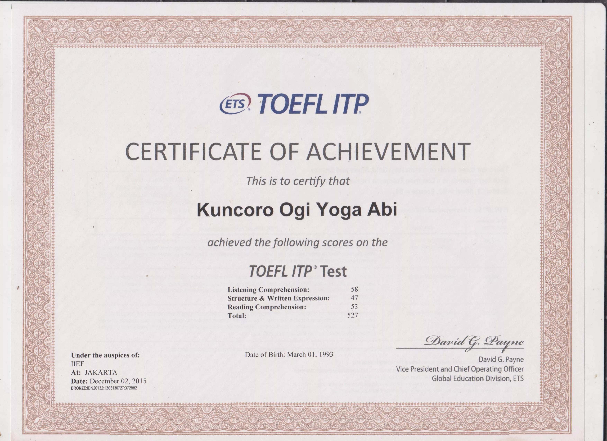
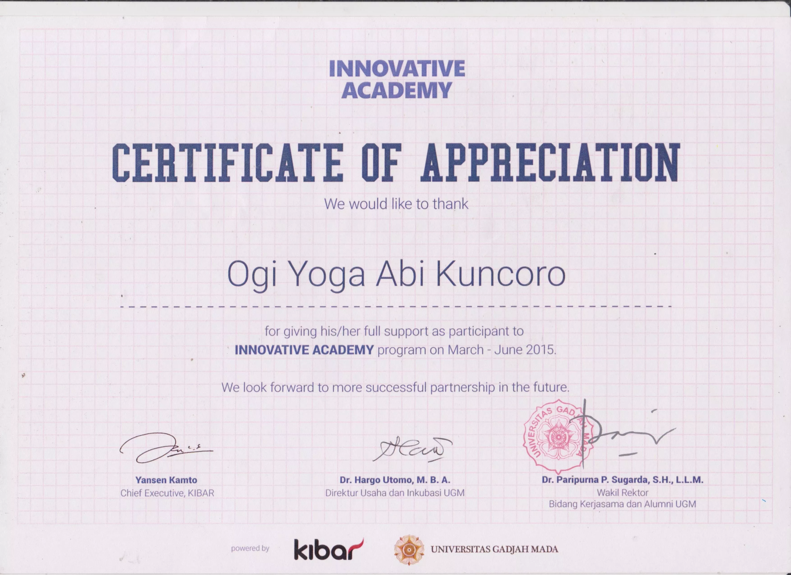
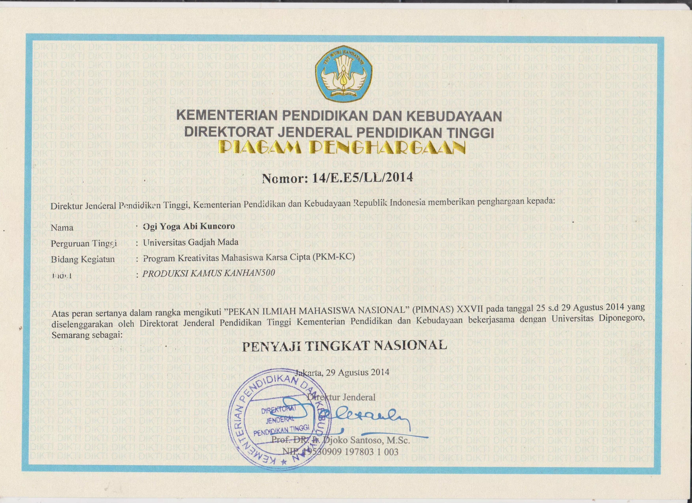

“The only source of knowledge is experience” — Albert Einstein. It reminds me to stay focus on user experiences. Here are some good samples about design just to give you a flash-view about how deep I dive.
User Friendly
In touch mode, give adequate (e.g 20px) space between icon and outline. It gives clearance.
— Google Material Design
Prototyping
Prototyping allows us to validate design early in software development life cycle. The process helps spark innovation, encourage user-centered thinking, and get you to product launch faster.
— Design Sprint
Usability Evaluation
Heuristic testing was more effective in uniquely identifying minor problems. User testing, however, was more effective than heuristic evaluation in uniquely identifying major problems.
— Layla Hasan (2012)
Perceivable
Provide text alternatives for any non-text content so that it can be changed into other forms people need, such as large print, braille, speech, symbols or simpler language.
— WCAG 2.0
Design Cycle
After many studies about design development process were reviewed, I found 3 main processes of design development process. They are: Diagnose > Design > Evaluation (Repeat). Two main ideas in agile development are Iteration & Time span. Iteration means repeatation development process may deliver good design product quality. It's more effective than spend more time to assure "perfectness".
— Me
Time Span
Time span means giving a special time which duration is set. Time span gives developer motivation. It also good management tool for procrastinator. Related talk: .
— Me
Natural Design
Luke Wroblewski talked about input-form and natural design in Conversions, 2017. He told about design solution that not always screen, e.g IOT Smarthome, Tide Pods, etc. He said "What did you do? Are you designing just by moving pixels?". Then he explained natural design, which is based on natural way of human interactions.
Some of my recorded projects & works are listed here. The projects sparated into Web projects & Printed projects.
This is one of my KKN-UGM 2015 project for Science & Technology sector. It's a Website for Desa Wisata Serang, Purbalingga. Faris, Fakhri, and Me developed the Website about 1 month long. Faris worked as backend (Laravel etc), Fakhri made the contents and web-skeletons, and I worked as frontend (Bootstrap etc) & design. CRUD system for maintain the Web's contents is included in the Web.
Adopsi Pohon is my KKN's Leader project which is proposed to help Desa Serang gets more variety of plants and strengthens soil. I helped him creating landing page (Website) and poster. It developed using Bootstrap and basic HTML/CSS.
allshop is my thesis's object. It's a prototype of Bussiness-to-Consumer E-commerce. Prototype used to evaluate design development process that lies on User Centered Design and Agile Development researches nowdays. The process uses LeanUX, Scrum, and Design sprint along with some design methode obtained such as Information System Research (ISR), ISO 9241-210, etc.

Kanhan500 is a Japan-Korea basic dictionary. It helps us to understand both Kanji (Japan) and Hanja (Korea) characters effectively. Kanhan500 consist 500 Kanji & 500 Hanja characters along with its picture, writing order, and sentence samples. Kanhan500 is product of PIMNAS XXVII PKM-KC 2014. My job was designed it into a real product and prepared all PPTs, Poster, social media etc.
Cembako is startup-coursework. Cembako aims to create stability in market price, override the confusion in any crucial moments. It is both giving factual information of the commodities price analyzed by government, at the same time monitoring and collecting price in traditional market reported by society itself. I'm a CTO in Cemabako's team. I also design apps Wireframe, Catalog, X-banner, and apps UI.
Some collections of my academic achievements.
TOEFL ITP Score 527 at 2015
Lumia Apps Olympiad 1st Place KrazyMarket Category. See video here.
Innovative Academy 2015
PIMNAS XXVII PKM-KC "Produksi Kamus Kanhan500" 2014
